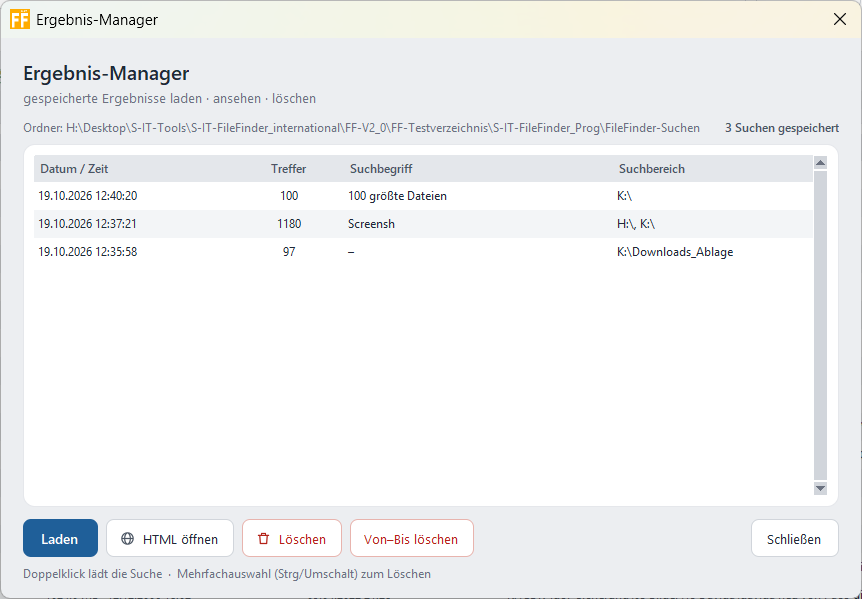
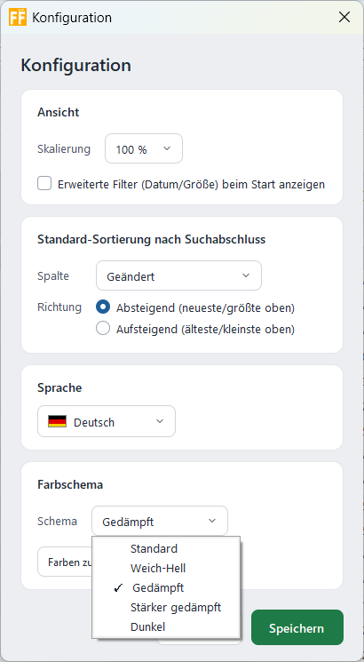
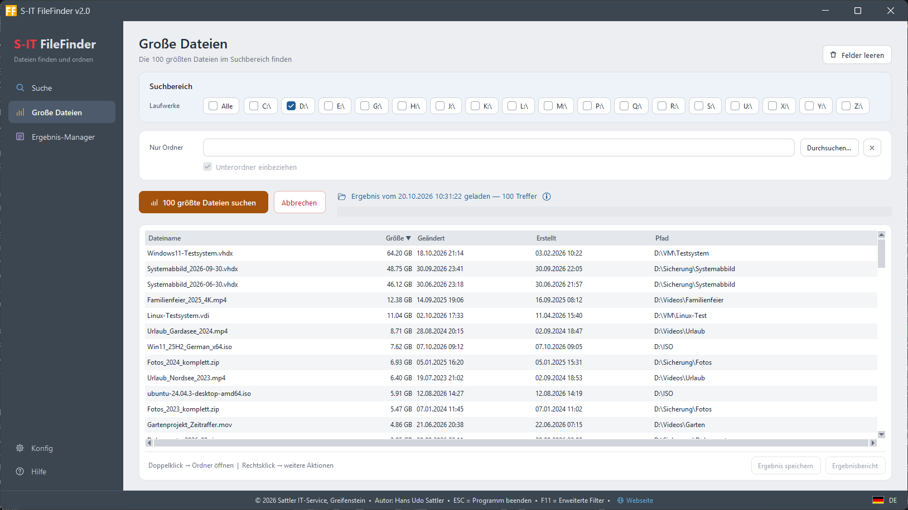
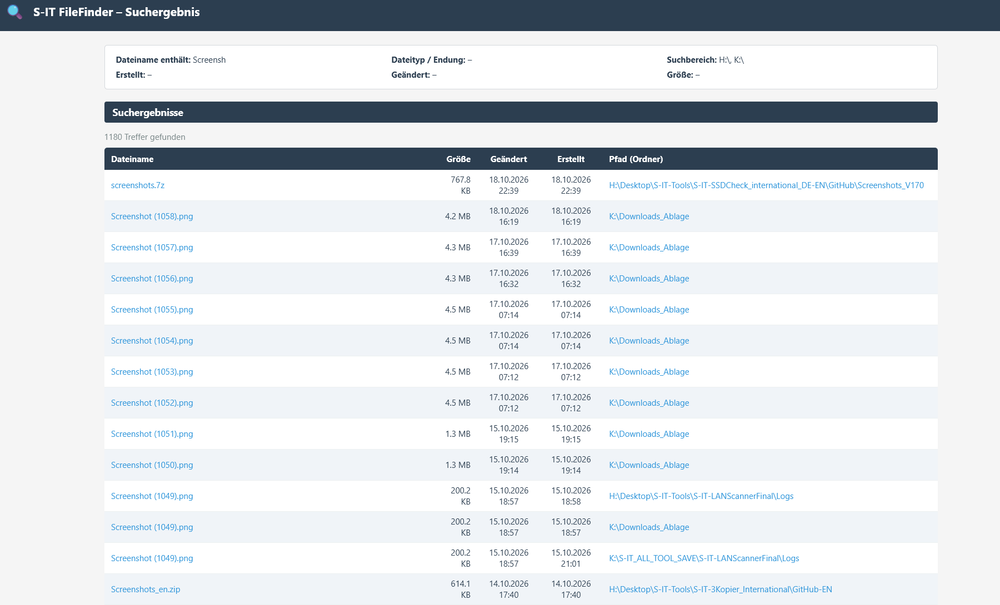

Vier Sprachen NEU
Deutsch, Englisch, Französisch und Spanisch – jederzeit im Konfig-Dialog umstellbar. Übersetzt sind die Oberfläche, alle Meldungen, der Ergebnis-Manager, der HTML-Bericht und die Hilfe.
Namensbruchstücke
Suche nach einem oder mehreren Teilen des Dateinamens – durch Leerzeichen getrennt, Groß-/Kleinschreibung egal.
Gezielte Ordnersuche
Statt ganzer Laufwerke nur einen bestimmten Ordner samt Unterordnern durchsuchen (z. B. den Download- oder einen Projektordner) – die Suche ist dann in Sekunden fertig. Beim Leeren des Felds kehrt die vorherige Laufwerksauswahl automatisch zurück.
Dateityp / Endung
Gezielt nach Dateitypen suchen – z. B. jpg, .pdf oder docx, mit oder ohne Punkt.
Alle Laufwerke
Lokale Laufwerke und eingebundene Netzlaufwerke per Checkbox auswählen – einzeln oder alle auf einmal.
Datum & Größe
Erstell- und Änderungsdatum sowie Dateigröße als erweiterte Filter – per F11 jederzeit ein- oder ausklappbar.
Sortieren per Klick
Ein Klick auf die Spaltenüberschrift sortiert die Treffer nach Name, Größe, Datum oder Pfad – Größe und Datum korrekt nach echtem Wert, nicht nach Text.
Große Dateien finden
Auf Knopfdruck die 100 größten Dateien der gewählten Laufwerke oder des gewählten Ordners anzeigen – ideal, um Speicherfresser aufzuspüren.
Kopieren, Verschieben, Papierkorb
Mehrere Treffer markieren und direkt im Tool kopieren, verschieben oder in den Papierkorb legen – mit Fortschrittsanzeige und ohne versehentliches Überschreiben.
Speichern & Ergebnis-Manager
Suchergebnisse speichern und später wieder laden oder als HTML-Bericht ansehen – verwaltet im übersichtlichen Ergebnis-Manager.
Anzeige & Konfiguration
Volle DPI-/4K-Unterstützung, Darstellungsgröße 90–200 % und Standard-Sortierung – zentral im Konfig-Dialog einstellbar.
S-IT FileFinder spricht vier Sprachen. Die Sprache lässt sich jederzeit im Konfig-Dialog umstellen; Hilfe und Änderungsverlauf gibt es zu jeder Sprache.
English




Die aktuelle Version findest du im Release-Bereich auf GitHub.
| Komponente | Anforderung |
|---|---|
| Betriebssystem | Windows 10 / Windows 11 (64-Bit) |
| Bildschirm | Ab 1024 × 768 – optimiert für FHD und UHD/4K |
| Sprachen | Deutsch, Englisch, Französisch, Spanisch – im Programm umstellbar |
| Rechte | Keine Administratorrechte erforderlich |
| Installation | Nicht erforderlich – portabel, direkt aus dem Ordner startbar |
| Lieferumfang | Ordner S-IT-FileFinder\ mit EXE und Laufzeitdateien sowie den Unterordnern Lang (Sprachpakete), Help (Hilfe und Änderungsverlauf in vier Sprachen), License (Lizenz und Haftungsausschluss) und Config |
- Neu: Vier Sprachen – Deutsch, Englisch, Französisch und Spanisch. Die Umstellung erfolgt im Konfig-Dialog über den Abschnitt „Sprache"; nach einer kurzen Rückfrage startet das Programm in der gewählten Sprache neu. Übersetzt sind Oberfläche, Kontextmenü, Statuszeilen, alle Meldungsfenster, der Ergebnis-Manager und das Fenster für Dateiaktionen
- Neu: Der HTML-Ergebnisbericht folgt der Programmsprache – Überschriften, Spalten und Kopfangaben
- Neu: Hilfe und Änderungsverlauf in allen vier Sprachen, mit Sprachleiste oben auf jeder Seite
- Verbessert: Aufgeräumter Programmordner – neben der EXE liegen nur noch die Unterordner
Lang,Help,LicenseundConfig
- Neu: Schaltfläche „🏠 Start" in der Kopfleiste – bringt das Programm jederzeit zurück zur leeren Startansicht, auch aus einem geladenen Ergebnis oder der Ansicht „Große Dateien" heraus
- Neu: Bei einer Ordnersuche zeigen Ergebnisbericht und Ergebnis-Manager jetzt den durchsuchten Ordnerpfad an („Suchbereich" statt „Laufwerke"); beim Laden einer gespeicherten Ordnersuche wird der Ordner wieder ins Feld „Nur Ordner" übernommen
- Neu: Link „🌐 Webseite" in der Fußzeile – öffnet die FileFinder-Projektseite direkt im Browser
- Alle drei Neuerungen gehen auf Nutzervorschläge aus der Praxis zurück – danke dafür!
- Neu: Gezielte Ordnersuche – über das Feld „Nur Ordner" wird ausschließlich ein bestimmter Ordner samt Unterordnern durchsucht statt ganzer Laufwerke; gilt auch für „Große Dateien". Die Laufwerksauswahl wird währenddessen deaktiviert, beim Leeren des Felds kehrt die vorherige Auswahl zurück
- Verbessert: Der Ausschluss der Windows-Systemordner (
Windows,$Recycle.Binu. a.) im Wurzelverzeichnis der Laufwerke greift jetzt zuverlässig – Suchen über das Systemlaufwerk laufen dadurch spürbar schneller - Neu: Skalierungsstufe 90 % im Konfig-Dialog für kompaktere Darstellung auf kleineren Bildschirmen
- Hilfe überarbeitet: neuer Abschnitt zum Suchbereich (Ordner oder Laufwerke), zusätzlicher Praxis-Tipp zur gezielten Ordnersuche
- Sortierung: Treffer per Klick auf die Spaltenüberschrift sortieren – Größe und Datum korrekt nach echtem Wert statt nach Text
- Große Dateien: die 100 größten Dateien der gewählten Laufwerke auf Knopfdruck anzeigen – zum schnellen Aufspüren von Speicherfressern
- Dateiaktionen: mehrere Treffer markieren und im eigenen Fenster kopieren, verschieben oder in den Papierkorb legen – mit Byte-genauem Fortschrittsbalken und ohne Überschreiben (automatische Umbenennung)
- Ergebnisse speichern: Suchergebnisse speichern, später wieder laden oder als HTML-Bericht ansehen – verwaltet im neuen Ergebnis-Manager
- Konfiguration: zentraler Dialog für Darstellungsgröße, erweiterte Filter beim Start und Standard-Sortierung (gespeichert in
FileFinder-config.ini) - Aktualisierte Hilfe-Datei und zahlreiche Detailverbesserungen
- Neustart-Fix: DPI-Umschaltung startet die neue Instanz jetzt zuverlässig ohne „Failed to import encodings"-Fehler – kompilierte EXE wird direkt gestartet, kein Temp-Pfad mehr
- --onedir: Umstellung auf Ordner-basierte EXE – kein Entpacken in Temp beim Start
- Neustart-Verzögerung (200 ms) verhindert Race Condition beim Schließen
- Verständlichere Bezeichnungen: „Erstelldatum" und „Änderungsdatum"
- Einheitliche Symbole (📅 📏 ✏️), bündig untereinander; Von/bis-Felder dichter beieinander, Labels linksbündig
- Größenfilter arbeitet in Megabyte statt Kilobyte; Maximalgröße erkennt automatisch MB oder GB im HTML-Ergebnislog
- F11-Umschalter für Datum- und Größenfilter; die Fensterhöhe passt sich automatisch an
- Darstellungsgröße wählbar (100–200 %) mit optionalem Programm-Neustart; vollständige DPI-/4K-Skalierung
- Automatische Fensterbreite bei vielen Laufwerksbuchstaben; verbesserte Datumsbeschriftungen, überarbeiteter Header, automatische Startgröße und -position
- Einfrieren beim Start auf Systemen mit DVD-Laufwerk oder Kartenleser ohne eingelegtes Medium behoben (Laufwerke werden über die Windows-API ermittelt)
- Suche nach Namensbruchstücken, Dateityp, Erstell-/Änderungsdatum und Dateigröße; Multi-Laufwerk-Unterstützung mit Alle-Checkbox
- HTML-Ergebnislog mit klickbaren Pfaden; Kontextmenü (Ordner öffnen, Datei öffnen, Pfad kopieren); Hilfe-Button mit HTML-Dokumentation
S-IT FileFinder wird kostenlos entwickelt und gepflegt – über eine kleine Unterstützung freue ich mich:
PayPal – tool-entwicklung@sattler-it.de